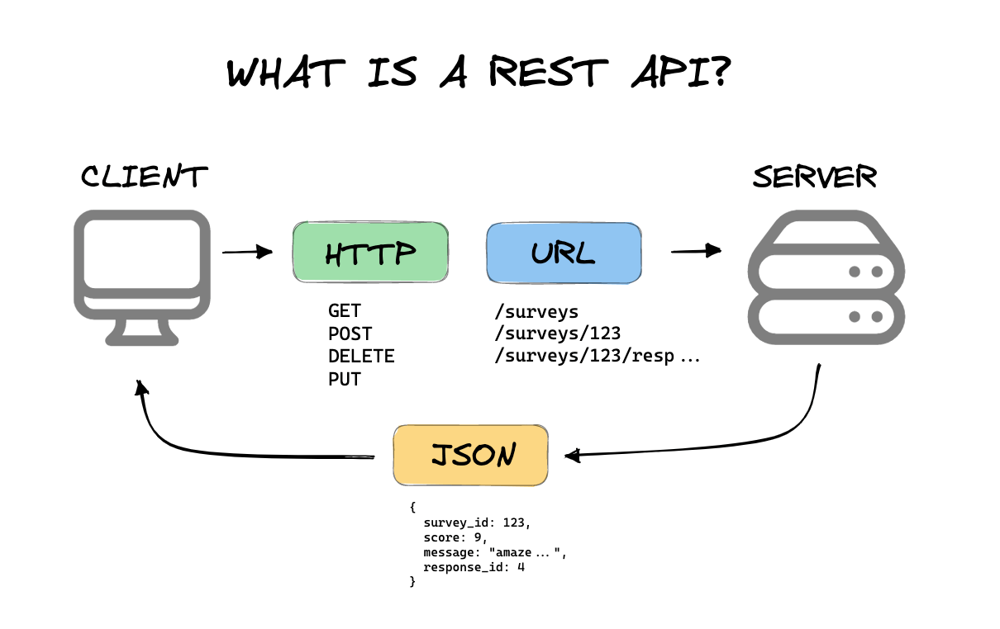

🔗 API-Grundlagen
Was eine API ist, REST-Prinzipien, HTTP-Methoden und Statuscodes - und eine simulierte, realistischere REST-API rund um eine Mitarbeiterverwaltung: verschachtelte Ressourcen, Filtern/Suchen/ Sortieren/Paginieren per Query-Parameter, und ein simulierter Bearer-Token-Schutz auf allen schreibenden Endpunkten.
📺 Vertiefung: REST-API Einführung | Was ist eine REST-Schnittstelle? (Coding Crashkurse)
Was ist eine API?
i
Stell dir ein Restaurant vor: du bestellst beim Kellner (der
API), ohne die Küche (den Server/die Datenbank dahinter) zu
sehen oder zu verstehen. Der Kellner nimmt die Bestellung
entgegen und bringt dir ein Ergebnis zurück - genau dieses
Prinzip einer klar definierten Schnittstelle steckt hinter
jeder API.
i
Eine API (Application Programming Interface) ist eine definierte Schnittstelle, über die zwei Programme strukturiert Daten austauschen können - ohne dass eine Seite wissen muss, wie die andere intern funktioniert. Eine REST-API (Representational State Transfer) ist der heute mit Abstand gängigste Ansatz dafür: sie nutzt das ganz normale HTTP-Protokoll (dasselbe, das auch Webseiten überträgt) und adressiert Daten über URLs.

HTTP-Methoden: CRUD über eine API
| Methode | CRUD-Bedeutung | Beispiel |
|---|---|---|
| GET | Read (lesen, keine Änderung) | GET /employees |
| POST | Create (neu anlegen) | POST /employees |
| PUT | Update - komplett ersetzen | PUT /employees/1 |
| PATCH | Update - nur einzelne Felder ändern | PATCH /employees/1 |
| DELETE | Delete (löschen) | DELETE /employees/1 |
Aufbau einer Anfrage
Pfad-Parameter identifizieren eine konkrete Ressource
direkt in der URL (/employees/42 = Mitarbeiter
Nr. 42). Verschachtelte Pfade drücken zusätzlich eine
Zugehörigkeits-Beziehung aus
(/departments/1/employees = alle Mitarbeiter
DIESER Abteilung). Query-Parameter filtern/steuern
die Anfrage zusätzlich, angehängt nach einem Fragezeichen und mit
& kombinierbar
(/employees?department=1&sort=-salary).
Der Request-Body (meist JSON) trägt bei
POST/PUT/PATCH die eigentlichen Daten. Wichtige Header:
Content-Type: application/json (sagt dem
Server, wie der Body zu lesen ist) und
Authorization: Bearer <token> (weist
den Absender aus - erforderlich für alle schreibenden Endpunkte in
der Sandbox unten).
Filtern, Suchen, Sortieren, Paginieren
i
Bei grossen Datenmengen will niemand ALLES auf einmal geschickt
bekommen - Query-Parameter erlauben es dem Client, genau
einzugrenzen, was er wirklich braucht.
i
Die Sandbox unten unterstützt bei GET /employees
mehrere kombinierbare Query-Parameter:
| Parameter | Wirkung | Beispiel |
|---|---|---|
| department | Nur Mitarbeiter dieser Abteilungs-ID | ?department=2 |
| active | Nur aktive/inaktive Mitarbeiter | ?active=true |
| search | Teiltreffer im Namen (Gross-/Kleinschreibung egal) | ?search=meier |
| sort | Sortierung; ein führendes "-" kehrt sie um | ?sort=-salary |
| page / limit | Nur eine "Seite" von N Einträgen abrufen | ?page=1&limit=2 |
Die Antwort auf GET /employees hat deshalb
immer die Form
{ data: [...], meta: { total, page, limit } } -
das meta-Feld verrät dem Client, wie viele
Einträge es insgesamt gibt, auch wenn gerade nur ein Ausschnitt
geliefert wurde.
HTTP-Statuscodes
i
Die erste Ziffer verrät schon die grobe Richtung: 2 = alles gut,
4 = du (der Client) hast einen Fehler gemacht, 5 = der Server hat
ein Problem, obwohl deine Anfrage in Ordnung war.
i
| Code | Bedeutung |
|---|---|
| 200 OK | Erfolgreich, mit Antwortinhalt (z.B. bei GET, PUT, PATCH) |
| 201 Created | Erfolgreich angelegt (typisch nach POST) |
| 204 No Content | Erfolgreich, aber bewusst ohne Antwortinhalt (typisch nach DELETE) |
| 400 Bad Request | Die Anfrage selbst ist fehlerhaft (z.B. Pflichtfeld fehlt, ungültige Referenz, ungültiges JSON) |
| 401 Unauthorized | Keine oder ungültige Anmeldedaten mitgeschickt |
| 403 Forbidden | Angemeldet, aber ohne Berechtigung für diese Aktion |
| 404 Not Found | Die angefragte Ressource existiert nicht |
| 500 Internal Server Error | Unerwarteter Fehler auf dem Server, obwohl die Anfrage korrekt war |
Realistisches Beispiel: Mitarbeiterverwaltung
i
Zwei zusammenhängende Ressourcen, wie in echten APIs üblich:
jeder Mitarbeiter gehört über "departmentId" zu genau einer
Abteilung - ein Fremdschlüssel, ganz wie im Datenbanken-Modul.
i
Diese Sandbox simuliert zwei verknüpfte Ressourcen:
departments (Abteilungen) und
employees (Mitarbeiter, mit Fremdschlüssel
departmentId). Lesende Endpunkte
(GET) sind frei zugänglich, alle
schreibenden Endpunkte (POST,
PUT, PATCH,
DELETE auf /employees)
verlangen einen gültigen Authorization-Header:
Authorization: Bearer demo-token-123
Fehlt dieser Header oder stimmt der Token nicht, antwortet die
Sandbox mit 401 Unauthorized - unabhängig
davon, ob der restliche Request ansonsten korrekt wäre.
Aktueller Zustand des simulierten Backends
i
Diese Tabellen zeigen live, was die simulierte API tatsächlich
"gespeichert" hat - jede Anfrage unten wirkt sich sofort hier
aus. So siehst du direkt, was z.B. ein POST oder DELETE bewirkt
hat.
i
departments
employees
API-Sandbox
Probier's aus, z.B.:
🧩 Schritt für Schritt: eine API abfragen
Baue für jede Aufgabe unten selbst die passende Anfrage (Methode, Pfad, ggf. Authorization-Header und Body) und klicke "Senden & Prüfen".